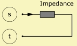
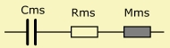

|
 |
| Purpose | Formula defined impedance |
| Type | Network element (2 pole) |
| Domain | All |
| Used in | System |
| See also | Formula |
Impedance 'Any Name'
Node=s=t
Z={...}
This two-pole implements an impedance in the network, where the value is specified by a formula-system.
The Impedance element can be an electrical, mechanical or acoustical element.

In this example Impedance comprises four parameters, which shall control the model of a mass-resistance-compliance resonator usually found as part of a loudspeaker-driver. Mms, Cms and Rms are specified here as global constants at the top of script. In this way you are able to use them in other elements, too. The formula-term (1 + ω/ω0) makes the mass of the vibrating assembly frequency dependent. Here the idea is that the effective mass becomes smaller at high frequencies. At 5kHz its value is the half of the specified value.'j' is the imaginary unit. The result of the last formula is assigned to the component. The last identifier 'Zms' could also be omitted.
Def_Const
{ Mms=1e-3; // Mechanical mass [kg]
Rms=1; // Mechanical resistance [Ns/m]
Cms=70e-6; // Mechanical compliance [N/m]
}
...
System 'S1'
...
Impedance 'Imp1'
Node=100=110
Z={ wo = 2*pi*5000;
Zms = Rms + j*w*Mms/(1 + w/wo) + 1/(j*w*Cms) }
...
The effect of viscosity and thermal exchange in a duct leads to a frequency dependent resistance. The resistance increases approximately as:
Ra(f) ∝ √f
The formula for viscosity and thermal exchange is given at parameter Ra of component AcouResistance:
Impedance 'Imp1'
Node=100=110
Z={ WD=10e-2; // Width of duct
HD=1e-2; // Height of duct
L=30e-2; // Length of duct
rho=1.189; // Density of air
c=343; // Velocity of sound in air
nue=18.2e-6; // Dyn. viscosity
gamma=1.402; // Specific heat of air @ 20° and 101kPa
dvo=sqrt(nue/(rho*pi)); // Viscosity boundary layer factor
dho=sqrt(5*nue/(3*gamma*rho*pi)); // Thermal boundary layer factor
D=2*(WD + HD); // Perimeter
S=WD*HD; // Area
k=w/c; // Wave-number
Ra=rho*c*D*L/(2*sqr(S))*k/sqrt(f)*(dvo + (gamma-1)*dho);
}